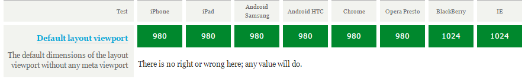
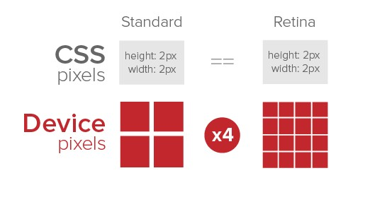
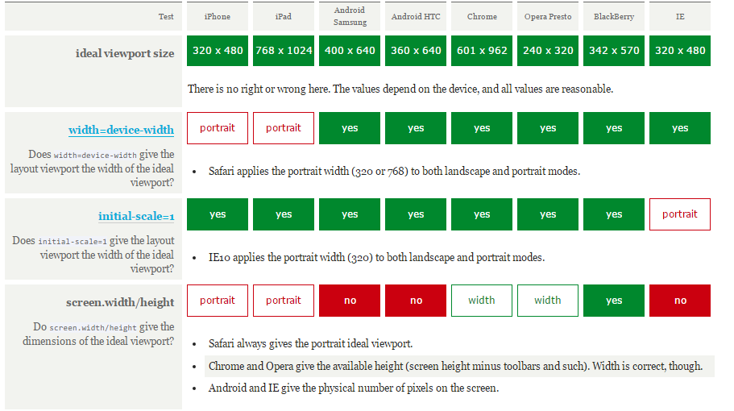
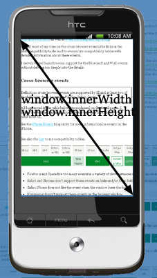
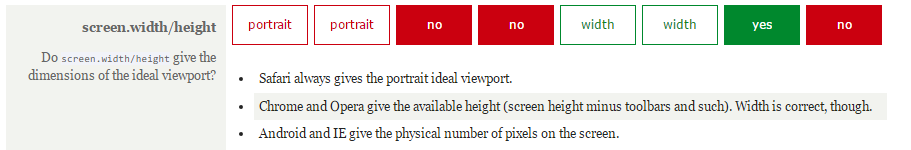

移动适配的解决方案
perfect viewport解决方案
PPK大神提出三种viewport:
- layout viewport
- visual viewport
- ideal viewport
什么是viewport
CSS中没有任何宽度声明时，每个块级元素的默认宽度都为100%。
- 相对于什么的100%呢？
每一个CSS宽度的百分比都是根据它的父元素的宽度来计算的，所以元素的宽度为父元素的宽度为父元素宽度的100%。 - html的包含块（viewport）
在CSS标准文档中，viewport被称为初始包含块（initial containing block）。这个初始包含块是所有CSS百分比宽度推算的根源，它给CSS布局限制了一个最大宽度。
在PC端，viewport的宽度和浏览器窗口的宽度一致。如果不管margin和padding，那么html和body元素也都与浏览器窗口的宽度一致。
- 在mobile上，如果viewport的宽度和浏览窗口的宽一致，效果怎么样？（就PC网站移到mobile上而言）
体验很差：因为有些移动端的浏览器会对没有mobile-optimised网站尽可能地缩小来让用户看到网站的全貌，易读性很差。而对于flow layout的网站，通常会被挤压在一起。
解决方法：针对移动端出特定的设计稿（H5）
viewport太窄了，以至于不能正常展示你的CSS布局。解决方案是使viewport变宽一些。需要将其分为成：layout viewport和visual viewport。
layout viewport
layout viewport——在页面渲染之前，浏览器是需要知道layout viewport的宽度，CSS布局会根据它来计算，并被它约束，如width: 20%。它与浏览器屏幕宽不再相关联，而是完全独立的。而且它很好地解决了将PC网站移到mobile上的问题。

为了能在移动设备上正常显示传统桌面端的页面，移动浏览器厂商们都为layout viewport设定默认宽度（没有标准，自定制）,一般默认layout viewport的宽度远大于屏幕的宽度：

注意：默认值只在没有meta viewport声明时才会生效(因为可以通过meta来修改layout viewport)
说完layout viewport，那什么是visual viewport？它有什么特性，与layout viewport有什么不同呢？
visual viewport
layout viewport的默认宽度远大于屏幕宽度，加上CSS布局是根据layout viewport来渲染的。也就是说，某些情况用户只能看见页面的某个部分，而不是全部。而visual viewport决定了页面的可见区域，该区域是用户能看见的。

可以通过缩放来修改visual viewport,但缩放不会影响layout viewport。
ideal viewport
默认情况下，layout viewport默认宽度并不是一个理想的宽度，虽然它能让桌面网站页面不被压扁，但并不理想。这就是Apple和其他仿效Apple的浏览器厂商引入ideal viewport（即viewport meta，注意浏览器是不支持该标签的，因为没有ideal viewport）概念的原因——显示在ideal viewport中的网站拥有最理想的浏览和阅读的宽度，不会出现横向滚动条，不需要用户手动缩放，就可以完美地呈现给用户。ideal viewport对设备来说是最理想的视口布局尺寸。
如何设置ideal viewport
如果没有meta viewport标签声明，那么layout viewport将会维持它的默认宽度。
所以一般情况下，设置ideal viewport只是针对为H5设计稿。当在页面中添加如下代码，ideal viewport就会是生效：
<meta name="viewport" content="width=device-width">
上述代码会将layout viewport的宽度设置为理想视口的宽度。定义ideal viewport是浏览器的工作，而不是设备或操作系统的工作。因此同一设备不同浏览器拥有不同的ideal viewport,虽然ideal viewport是有浏览器定义的，但是ideal viewport的大小还是受设备约束的。更多测试数据


meta viewport标签应该被放在HMTL文档的<head>中，书写格式如下：
<meta name="viewport" content="name=value,name=value">
每一个name=value都是一个给浏览器发号命令的指令，以,逗号分隔，共有5个：
- width：设置
layout viewport的宽度，为一个正整数，或字符串width-device - initial-scale：设置页面的初始缩放值，为一个数字，可以带小数
- minimum-scale：允许用户的最小缩放值，为一个数字，可以带小数
- maximum-scale：允许用户的最大缩放值，为一个数字，可以带小数
- height：设置
layout viewport的高度，这个属性对我们并不重要，很少使用 - user-scalable：是否允许用户进行缩放，值为
no或yes, no代表不允许，yes代表允许
width
device-width
通常情况下希望，当设备进行旋转时，ideal viewport进行响应，即浏览器会根据设备的旋转来调整ideal viwport，横屏的ideal viewport宽度大于竖屏的。但是iOS中的Safari总是保持竖屏的ideal viewport的宽度（iphone:320px, ipad:768px）。PPK猜想Apple这么做的原因是为了避免layout viewport的宽度改变导致页面reflow或repaint。 reflow或repaint会影响性能。- width=width
可以为width指定一个整数值。浏览器支持最大值是10000px，最小值约为ideal viewport的20%。android webkit不允许任何小于layout viewport的宽度。如小于则转为默认layout viewport宽度。而IE10不允许超出480px，超出则转为默认layout viewport宽度。

initial-scale
pixel
- 设备像素（device pixels）：设备屏幕的物理像素，任何设备的物理像素的数量都是固定的
- CSS像素（CSS pixels）：CSS像素是一个抽像的单位，主要使用在浏览器上，用来精确度量Web页面上的内容。一般情况之下，CSS像素称为与设备无关的像素(device-independent pixel)，简称DIPs。
100%缩放：上层是CSS像素，下层是设备像素（缩放操作的是CSS像素，而不是设备像素）

缩小：

放大

- 屏幕密度是指一个设备表面上存在的像素数量，它通常以每英寸有多少像素来计算(PPI)。
- 设备像素比（device pixel ratio）
设备像素比简称为dpr，其定义了物理像素和设备独立像素的对应关系：
设备像素比 ＝ 物理像素 / 设备独立像素
或设备像素个数和ideal viewport的比。

一个CSS像素相当于多少设备像素取决于屏幕的特性（密度）和缩放程度
zoom
zoom是一个放大或缩小CSS像素的过程。
缩放会影响是viewport的尺寸，放大会使得viewport变得更小，屏幕上显示的CSS像素更少，反之则。而这里的viewport对桌面和手机代表有所不同，在mobile上代表的是visual viewport,而layout viewport不会被缩放影响。但在桌面上代表的是visual viewport和layout viewport，因为两者是相同的，不可能只改变其中一个而另一个不变。因此就上所述而言，mobile上的visual viewport与zoom factor存在逆相关关系：放得越大，visual viewport就越小。如下公式：
visual viewport width = ideal viewport width / zoom factor
zoom factor = ideal viewport width / visual viewport width
initial-scale指令设置页面的初始缩放因子（zoom factor）。1代表100%，2代表200%，以此类推。而缩放因子是根据ideal viewport来计算的。
当设置了initial-scale指令时，实际上做了两件事：
- 浏览器会将缩放因子相对于
ideal viewport计算出visual viewport的宽度。 - 将
layout viewport的宽设置为visual viewport的宽。
如下结论：会将layout viewport设置为ideal viewport，效果与width=device-width相同，也就说：
<meta name="viewport" content="initial-scale=1"> 与 <meta name="viewport" content="width=device-width">效果是等同的。
当设置initial-scale=1时，Safari上的ideal viewport的尺寸会响应屏幕的旋转。如iphone5，竖屏模式下为320px，横屏模式为568px；解决了iOS中的Safari在width=device-width总保持竖屏模式下的ideal viewport的宽的bug。而IE10有着完全相反的问题：initial-scale=1在横屏模式下ideal viewport宽度总保持竖屏ideal viewport的宽。但是width=device-width时，就恢复正常了。

因此，为了解决ideal viewport横竖屏的响应问题，通常我们使用如方法：
<meta name="viewport" content="initial-scale=1,width=device-width">
现在Safari和IE的问题都解决了，这就是perfect meta viewport
如果想要兼容IE，需要添加如下CSS代码：
@-ms-viewport{
width: device-width;
}
因为IE只在手机上支持meta视口标签，而在平板上不支持。而且由于Microsoft希望向iPhone靠拢，总是使用320px作为理想视口的宽度。当使用@-ms-viewport时，IE会使用它真正符合设备尺寸的ideal viewport。其实@-ms-viewport重写了meta标签，所以同时使用meta和@-ms-viewport可以保证IE使用真正的iedeal viewport。(@viewport是opera提出的，在Presto中)
question
<meta name="viewport" content="initial-scale=1,width=400">如何设置layout viewport的宽？
答：取最大值
minimum-scale和maximum-scale
minimum-scale和maximum-scale可以设置缩放程度的最小值和最大值，与initial-scale一样，它们也是根据ideal viewport来计算的
浏览器默认缩放级别5（20%-500%），有这些指令时可扩大到10（10%-1000%）。

demo参考
javascript
layout viewport:document.documentElement.clientWidth/Height，被普遍支持。

visual viewport:window.innerWidth/Height，解决普遍支持。
ideal viewport: screen.width/height，存在严重的浏览器兼容性问题

screen.width/height，根据浏览器情况，会两种值：
ideal viewport的尺寸(这个是正确的)- 屏幕的设备像素尺寸

overview
more